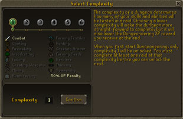
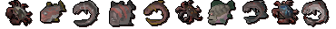
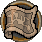
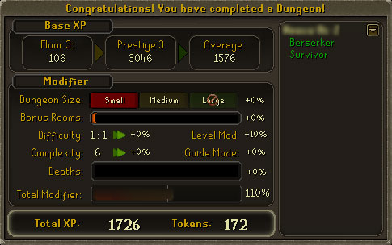

")
Dungeoneering - The Basics
Introduction | Location | Stage 1: Forming a Party | Stage 2: Choosing a Floor and Complexity
Stage 3: The Starting Room | Stage 4: Raiding a Dungeon | Stage 5: Rewards and Binding
Stage 3: The Starting Room | Stage 4: Raiding a Dungeon | Stage 5: Rewards and Binding
Dungeoneering is available to all players, but some elements are only available to RuneScape members. Please subscribe to get these features.
Raiding a dungeon in Daemonheim is 'Safe'. Although you may die, you will respawn in the dungeon's starting room with all your items (for more information on death in Daemonheim, click here).
Introduction

Daemonheim does not have any skill or quest requirements, and is available to both free players and members. Daemonheim's floors can be explored by parties of one to five people, and they can be as simple or complex as you wish them to be; you can face a dungeon of pure combat, perhaps, or a dungeon that tests every skill.
The walls of Daemonheim shift and warp, so the dungeon you raid will always be unique!
A dungeon raid consists of five stages, and this guide follows them chronologically. The stages are:
- Stage 1: Forming a Party
- Stage 2: Choosing a Floor and Complexity Level
- Stage 3: The Starting Room
- Stage 4: Raiding a Dungeon
- Stage 5: Rewards and Binding
Location

Once on the peninsula of Daemonheim, you will need to follow the light grey paths to the top, where the castle is situated.
Stage 1: Forming a Party
![[image]](../../img/main/kbase/skills/dungeoneering/screenshots/ring_of_kinship.gif) To begin a dungeon raid, you will need only one item: the ring of kinship. This can be gained from the dungeoneering tutor, on the east side of the castle entrance. He will also offer you Dungeoneering guidance, should you need it, and will replace your ring if you lose it.
To begin a dungeon raid, you will need only one item: the ring of kinship. This can be gained from the dungeoneering tutor, on the east side of the castle entrance. He will also offer you Dungeoneering guidance, should you need it, and will replace your ring if you lose it.
No items, aside from the ring of kinship and the orb of oculus, are allowed inside Daemonheim; the Fremennik have set up a quarantine, of sorts, where no items can go in or out of the dungeons. To bank your items, visit the bank teller on the west side of the castle entrance.
With only a ring of kinship (or orb of oculus, should you wish) in your inventory or worn inventory, you are ready to form a raiding party. There are three methods of raiding a dungeon:
- A single-player party
- A party of 2-5 people
- An auto-grouped party

You may now start raiding. Travel to a dungeon entrance, immediately on the left or right as you enter the castle courtyard. Enter it, and you are ready to select your floor and complexity level, as described in Stage 2: Choosing a Floor and Complexity Level.
Parties of 2-5 people
The ring of kinship can be used to manually form a party. Up to five people can be in any one raiding party.
To set up a raiding party to which other players can be invited, left-click on the ring of kinship while it is in your inventory or worn inventory. This will bring up the party interface. On this interface you will find the 'Form Party' button; click it and your name will appear in a list above the button. This is the beginnings of your party, and you are now ready to add others to it. You have been allocated the role of 'party leader'.
As party leader, you are the sole person responsible for inviting players to your party. The most common method of doing so is right-clicking on a player within the Daemonheim castle and selecting 'Invite'. The invited player will receive a red invite within their chatbox, which they can click and accept or decline. You may also invite a player using the 'Invite player' button within the ring of kinship's party interface. Click this and you will be able to manually enter the name of any player you would like to join your party. The player you wish to invite must be within sight, in the Daemonheim castle grounds, and on the same world.
Up to four invites can be sent in this manner, and only the party leader may send them. As players accept invites, you will find that they are added to the list on your party interface (the one that opens when you click the ring of kinship). Once you have a number of players that you are happy with, travel to a dungeon entrance, immediately on the left or right as you enter the castle courtyard. You are now ready to select your floor and complexity level, as described in Stage 2: Choosing a Floor and Complexity Level.
If you have been invited to an existing party, you will find a red line of text in your chatbox. Click on this red line of text and you will be offered the opportunity to 'Accept', 'Decline' or 'Decline Forever'. It is worth banking your items before accepting an invite, so that the bank interface does not interfere with the party interface. By accepting the invitation, you will find your name and the names of your party members in the ring of kinship interface. You will start a raid as soon as the party leader enters the dungeon entrance - skip to Stage 2: Choosing a Floor and Complexity Level. If you 'Decline', a message will be sent to the party leader stating that you turned down this invite. If you 'Decline Forever', the party leader will not be able to send you an invite for what remains of your gaming session.
Auto-grouped parties

There are two types of auto-grouping rooms in Daemonheim: 'themed' rooms which have Dungeoneering floor requirements, and a 'free-for-all' room that has no Dungeoneering floor requirements at all (for more information on what a 'floor' is, click here). Themed rooms can be found in the castle courtyard, to the left and right of each staircase. A free-for-all room, which has no Dungeoneering floor requirements at all, can be found between the two staircases. It is worth entering the free-for-all room if you want a raid that is likely to test your abilities to their upmost.
The game attempts to form a party every 30 seconds, so it will not be too long before you are organised into a raiding party. If only a few of you are waiting for a game, you will be grouped into a party regardless of the floors you have access to or your total skill levels. If there are many of you waiting for a raid, the game will attempt to group you according to the floors you have unlocked, and will then group according to your total skill level. Note: If a few of you are waiting to be grouped in an autogrouping room, you can always manually organise a party rather than wait for the auto-grouping room to form you into one.
All players in your party must have unlocked the floor and complexity level of the dungeon you are about to face. As such, the floor and complexity level is always determined by the dungeon raider with the least experience of Daemonheim. For more information on floors and complexity levels, read Stage 2: Choosing a Floor and Complexity Level.
Once you have been organised into a party, you will find that you can bypass Stage 2: Choosing a Floor and Complexity Level - since you have been autogrouped into a suitable floor and complexity level - and can skip straight to Stage 3: The Starting Room. It may be advisable to read stage 2 anyway, to get an idea of what is meant by complexity level and floor.
Leaving and rejoining a party
Once inside the dungeons, no new players may join the party. If a single player then leaves the party or accidentally loses connection, they can rejoin the party as long as their party is still completing a raid. In this case, any items you were carrying will be dropped on the floor where you last stood, so you can return to pick them up, or your party can pick them up for you. If all players leave a raid, the progress will be lost and you will have to begin your raid again.
To rejoin a raid in progress, simply left-click your ring of kinship and select 'Rejoin Party' on the interface. You will need to enter the name of a party member to be teleported back to your raid in progress. If you leave a raid that you were attempting on your own, you will not be able to rejoin it and begin where you left off; instead, you will have to start the raid again.
'Kicking' a player from a party
In those extreme moments when the party leader wishes to remove a player from the raiding party, a majority vote will need to be taken to see if the rest of the team agrees that the player should be removed. To instigate a vote, left-click on the ring of kinship and right-click the player's name, selecting 'Kick'. A message will then be sent to all players in the raiding party, asking them whether the player should be kicked or not. In the case of a majority, the player will be kicked from the party.
Stage 2: Choosing a Floor and Complexity Level
Having organised your party, you will be asked to select your floor and complexity level.
Dungeon 'floors'
As a rule, the deeper you go down into Daemonheim (floor 1 being near the surface, floor 2 being below that, all the way down to 35) the more powerful the creatures become. The power that resides at the bottom of Daemonheim both warps and distorts the creatures, making them potent and of a potentially higher combat level.
When you first start dungeoneering, you will only have floor 1 available to you. You must play through a floor before you can access the next, and you can only access a floor if it is equal to half your Dungeoneering skill level (rounded down) or less. For example, if you want to access floor 17 of Daemonheim, you must have raided floor 16 of Daemonheim at least once, and you must have a Dungeoneering level of 34 or higher.
You will also notice that different floors have different 'themes', and each theme has different challenges and enemies to encounter. You start in the 'frozen' theme of Daemonheim, but who knows what other areas reside in the mysterious dungeons?
Dungeon 'complexity levels'
The complexity level of a dungeon determines how many of your skills and abilities will be tested when raiding it. For example, a dungeon with a complexity level of 1 will only test your combat skills (melee, Ranged, Magic, Prayer, Constitution), while a dungeon with a complexity level of 6 will test every single one of your skills. Choosing a lower complexity level will make the dungeon more simple and straight-forward to complete, but it will also lessen the amount of Dungeoneering XP you get at the end of a raid.
You will start your dungeoneering 'career' with only complexity level 1 unlocked. To unlock the next complexity level, you will have to complete at least one dungeon of the complexity level that preceded it. So, to unlock level 2, you will need to have played at least one dungeon of complexity level 1.
You can click on the following complexity levels to find out more about the skills that are required to complete them:
- Complexity level 1 - Combat
- Complexity level 2 - Same as level 1 + Cooking + Firemaking + Fishing + Woodcutting
- Complexity level 3 - Same as level 2 + Making Weapons + Mining + Runecrafting
- Complexity level 4 - Same as level 3 + Farming Textiles + Hunting + Making Armour
- Complexity level 5 & 6 - Same as level 4 + Farming Seeds + Herblore + Summoning + Thieving
The Floor and Complexity Level interfaces

To find out which floor each player has unlocked, you can look at the 5 columns that run down the floor selection interface. These columns represent the adventurers in your raiding party, and each will have a highlighted bar that points to the deepest floor each player has access to in Daemonheim. You may choose any dungeon floor that EVERY player in your party has access to.
NOTE - If you select a floor that you or others in your party have raided since you last pressed the 'Reset' button (as shown by the ticks on the floor selection interface) then those players will receive a large XP reduction for repeating that floor. For more information on 'prestige', the 'Reset' button and resetting your dungeon progress, click here.
Once you are happy with your selection, confirm your choice in the bottom-right of the interface.

You will also notice that, in the bottom-right corner of the table of skills, there is a '% XP Penalty'. This XP penalty represents the reduction to your Dungeoneering XP reward for this dungeon; so, if you are playing a dungeon on complexity level 1, you will find that the Dungeoneering xp you gain is reduced by 50%. This is to encourage raiders to test themselves at the higher complexity levels.
As long as you have chosen a floor and complexity level that everyone in your party has unlocked, you can click the 'Confirm' button in the bottom-right of the interface. Depending on your party size and the complexity level you have chosen, you may be given the option to change your floor size and difficulty level.
Floor size:
Once you have selected your complexity level and floor, you will be able to amend the size of your dungeon. The floor size can be small (up to 16 squares), medium (up to 32 squares) or large (up to 64 squares). Only parties of 3-5 players can explore the large dungeons.
Difficulty:
After selecting the floor size, you may receive the message 'How many people do you want to aim the dungeon for?" (this does not show for solo players). You now have a choice: do you want the dungeon to be designed for a party size that is smaller than the one you have currently? Although a dungeon designed for a smaller party will be easier to complete, it will reduce the amount of XP you receive at the end of a raid.
For a suggested difficulty, it is recommended that you select one that is slightly lower than the number of people in your raiding party. The difficulty assumes that everyone in your party will be contributing in combat; in all likelihood you will have one player using their skills to produce arrows or runes, for example. A raiding party may find a difficulty of 5:3 (five players: the combat suited to a party of three) makes for an enjoyable raid, for example.
NOTE - the difficulty of the dungeon is ALWAYS based on the lowest skill and combat levels in your party. For example, a party of five playing a 5:3 difficulty dungeon will find that the skill challenges and creatures' combat levels are balanced according to the three players with the lowest skill or combat levels. If a high level player raids with a party of low-level players on a low difficulty dungeon, they may find themselves with an XP penalty of up to 60%. In this instance, a warning message will appear when choosing the difficulty.
Having finished customising your dungeon, you will then be ready for Stage 3: The Starting Room.
Stage 3: The Starting Room

Items:
Your complexity level determines the items you start with in the dungeon:
- Complexity level 1 - Armour and weapons for all combat styles are in your inventory at the start of a dungeon.
- Complexity level 2 - Armour and weapons for all combat styles are in your inventory at the start of a dungeon.
- Complexity level 3 - Armour for all combat styles are in your inventory. A small selection of weapons are available from the table in the starting room
- Complexity level 4 - A small selection of armour and weapons are available from the table in the starting room
- Complexity level 5 & 6 - A small selection of armour and weapons are available from the table in the starting room
Tiers:

You will also find various items strewn across the tables of the starting room. These range from food, runes and arrows to fishing rods, weapons and armour, depending on complexity levels. You will find that the items have 'tiers', noted either in their name or in their examine text (if you right-click and 'Examine' the item). This gives you a good idea of the potency of a weapon, armour or fish; a tier 3 fish will heal more life points than a tier 2 fish, for example. These item tiers range from 1-10, but tier 11 items can be obtained as rewards by completing a dungeon. Tiers 6-11 are only available to RuneScape members.
At this point, it is worth organising yourself and your fellow raiders into roles, to make sure the equipment is shared equally and that you are well prepared for whatever challenges face you. It is recommened that, in larger parties, that you have at least one ranger, melee warrior and mage, for example, and you may want to make someone a 'tank', healer or skiller. 'Tanking' involves putting yourself in a defensive stance, which will encourage any 'tankable' enemies to prefer fighting you in combat. Most large enemies are 'tankable'.
Smuggler:

The smuggler will also offer to buy or sell items in Daemonheim for coins, as he has acquired wares from less successful adventurers. It is worth visiting the smuggler for tools, such as tinderboxes and hatchets, should you need them. The smuggler has no shop stock on complexity level 1, while his stock will increase with each complexity level.
Finally, the smuggler has been able to smuggle some unique items outside of the dungeons. Simply visit his contact, the reward trader, on the surface near the Fremennik camp, to buy these items using your dungeon tokens. See Stage 5: Rewards and Binding for more information on this currency, or click here to see the rewards you can obtain from the trader.
Additional Information:
Depending on your complexity level, you may also find that the starting room has a number of skill locations: spinning wheels, furnaces, ranges and summoning obelisks, to name a few. These work identically to the ones you would find above ground in RuneScape, with only some very minor exceptions. Read the complexity level page of your current dungeon if you have any questions.
Stage 4: Raiding a Dungeon
The Basics
The most important thing to note is the aim of dungeoneering. Your aim is to get to the final room of each dungeon, where the boss awaits, so you can defeat it and gain a batch of Dungeoneering XP. To navigate to the end of the dungeon, you will have to overcome a number of challenges in the random layout of rooms. Those challenges are all noted in categories below. To make Daemonheim easier to navigate and your party easier to organise, there are a number of items and tools available to you.
Dungeoneering Tools
A dungeon map is available at all times, next to your minimap. Click on it and you will find a representation of the rooms you have explored and those you have not.
Your ring of kinship can also be clicked to view a great deal of information, including your current complexity level, floor and your party. It is possible to click on the name of a player in your party to see their inventory: invaluable if you are trying to find out who has the key to unlock a door in your dungeon.
On this party interface, you will also find a 'Guide Mode' and a 'Reset' button. The 'Reset' button is covered in Stage 5: Rewards and Binding and is not important for the moment. The 'Guide Mode' button, however, can be activated to show the critical path through a dungeon, giving you the exact route to follow. This can only be activated or deactivated by the party leader, and activating it will reduce the amount of XP you receive for a dungeon. It may only be toggled outside of a dungeon.
![[image]](../../img/main/kbase/skills/dungeoneering/screenshots/dungeon_sharedxp.gif) The party interface also offers the ability for anyone to toggle their shared XP on and off before a raid: this is done by right-clicking on the 'XP' that appears after your name on the party interface (accessed by left-clicking on the ring of kinship). Shared XP is automatically 'on' when you first start dungeoneering. When 'on', you will receive a share of the XP whenever a member of your party performs a skill task that you could have done with your levels. When you perform a skill task that another member of your party could perform, they will receive a share of your XP too. Only players with shared xp 'on' can give or receive shared xp.
The party interface also offers the ability for anyone to toggle their shared XP on and off before a raid: this is done by right-clicking on the 'XP' that appears after your name on the party interface (accessed by left-clicking on the ring of kinship). Shared XP is automatically 'on' when you first start dungeoneering. When 'on', you will receive a share of the XP whenever a member of your party performs a skill task that you could have done with your levels. When you perform a skill task that another member of your party could perform, they will receive a share of your XP too. Only players with shared xp 'on' can give or receive shared xp.
![[image]](../../img/main/kbase/skills/dungeoneering/screenshots/dungeon_hometeleport.gif) A Dungeon Home Teleport spell is available to you at all times, and can be found in your dungeon spellbook (Daemonheim has its very own magic spellbook. See Complexity level 1 for more information on these changes). Click it while outside of combat and you will be taken back to the starting room of your dungeon. This spell can be used as often as you like and has no rune cost. It is also possible, if you have the Magic level, to create a gatestone, a waypoint that you can teleport to. Click here for more information on the Create Gatestone spell.
A Dungeon Home Teleport spell is available to you at all times, and can be found in your dungeon spellbook (Daemonheim has its very own magic spellbook. See Complexity level 1 for more information on these changes). Click it while outside of combat and you will be taken back to the starting room of your dungeon. This spell can be used as often as you like and has no rune cost. It is also possible, if you have the Magic level, to create a gatestone, a waypoint that you can teleport to. Click here for more information on the Create Gatestone spell.
Finally, the party leader can right-click any enemies in the dungeon and 'Mark' them. This highlights the creature and identifies them as the creature that everyone should focus their attacks on. This can be done from outside the room you are about to explore, should you wish to remain safe while making the decision.
Combat rooms:
The most common challenge faced in Daemonheim is combat. As with above-ground RuneScape, you will need to defeat these creatures using magic, melee or ranged. Unlike above-ground RuneScape, however, you will find that each creature drops far more items and equipment. If you are low on weaponry or food, it may be worth picking off some smaller creatures to get the items required to defeat the larger beasts.
Should you die in a dungeon, you will restart in the starting room with all of your items. You will also find a death added to your death total, which affects the XP reward you receive at the end of the dungeon. If you have a gatestone in your inventory, you will automatically drop it so you can teleport to it using your Gatestone Teleport spell. Click here for more information on the gatestone spells.
Skill locations:
Particularly on the later complexities, you will find skill locations like ranges, farming patches and furnaces. These work similarly to their above-ground counterparts, with some minor exceptions. It is advisable to read the Knowledge Base pages for any complexity level you are about to attempt for the first time, to get a good sense of what is being added in terms of skill activities.
- Complexity level 1 - Combat
- Complexity level 2 - Same as level 1 + Cooking + Firemaking + Fishing + Woodcutting
- Complexity level 3 - Same as level 2 + Making Weapons + Mining + Runecrafting
- Complexity level 4 - Same as level 3 + Farming Textiles + Hunting + Making Armour
- Complexity level 5 & 6 - Same as level 4 + Farming Seeds + Herblore + Summoning + Thieving
Keys and doors:

These keys can be found in any room around the dungeon, so keep an eye out for red dots on the minimap within each room you explore. Keep talking with the rest of your team and let them know if you have a key in your possession. If you wish to look at another player's inventory, open the party interface from your ring of kinship and then right-click the player's name.
On later complexities, you may encounter skill doors. These doors cannot be opened until you have performed a skill action on them. A door may require a player to use their Agility skill to jump up and pull a switch, for example. Each door will be openable by at least one member of your team, unless you find yourself before a door to a bonus room. These bonus rooms do not need to be explored to complete a dungeon, but you will gain a greater amount of Dungeoneering XP at the end of a raid for exploring them.
Challenge rooms:
A dungeon isn't only about hacking your way to the end with a few doors to open on the way. Some rooms require you to stop and puzzle out a method of getting through to the next. There are a number of these challenge rooms, and they range from riddles to skill challenges to combat-based puzzles.
If you are having trouble in a challenge room, you may also visit the smuggler in the starting room, and he will offer his own brand of expertise to get you through.
Boss rooms:

Felling the beast in this room is the only way to finish your current dungeon and get to the floors below, so you and your team will have to defeat it together. If you have trouble beating the boss, talk to the smuggler in the starting room and he will give you some handy pointers, as each boss will have a quirk that will make it harder to defeat or more potent in combat.
Beating the boss leaves the room empty for you to click on the ladder to the level below. It may also leave you with a reward item in your inventory: you will be told if this is the case in your chatbox. These items are often more powerful than others you might find dropped in the dungeon, and, if you can use them, they may be worth binding - see Stage 5: Rewards and Binding.
Stage 5: Rewards and Binding
Rewards
After defeating a boss at the end of a dungeon, you may be lucky enough to find an item reward in your inventory (or on the floor, if your inventory is full). Each raider has a chance of receiving an item in this way, and the items can range from tier 1 to tier 11 (tier 1 to tier 5 if you are not a RuneScape member). Click here to see the various items you could win in this way. You may also find that your enemy dropped a book or journal. These elucidate the history of Daemonheim, and are automatically stored in your dungeoneering journal. You can view your dungeoneering journal at any time by right-clicking the ring of kinship and selecting 'Open journal'.
Binding
Before you exit the floor by travelling down the ladder in the boss room, it is worth 'binding' the more effective items in your inventory. By binding an item, you carry it over to the next dungeon (a bound item has a (b) after its name). This is useful as you will not keep ANY unbound items from one raid to another. So, if you have a particularly potent tier 11 item that you do not wish to lose, it is well worth binding it.
To bind an item, right-click on it in your inventory and select 'Bind'. At level 1 Dungeoneering, you can bind one item in this way per dungeon; at level 50 Dungeoneering you can bind two items; at level 100 you can bind three items; and at level 120 you can bind four items. Once bound, an item will remain bound forever, until you right-click and 'Destroy' the item, or sell it to the smuggler.
You may also bind one type of rune or arrow, and these do not count as one of your bound items. Ammunition binding is always available to you, and you can bind up to 125 runes or arrows of any one type. The amount of ammo you can bind never changes in size.
Prestige
Your prestige total is one of only two factors that determine the base value - the lump sum - of Dungeoneering XP you receive at the end of a raid. Your prestige total is a measure of how varied your dungeon raids have been; so, a high prestige total reflects a player who raids a wide variety of floors.
The prestige total is equal to one of two things, depending on whichever is higher: the number of different floors you have raided, or the number of different floors you raided BEFORE you last pressed the 'Reset' button on your ring of kinship interface. You receive the increased XP benefits of a prestige total once per floor. If you play a floor for a second time, your prestige total will not contribute to the XP you receive at the end of the raid. NOTE - Since it can be hard keeping track of which floor you have previously raided, the floor selection interface has a number of red flags to guide you to floors that have not been explored.
Of course, you will quickly reach a point where there are no more floors to explore with your current multiplier. This is where the 'Reset' button on your party interface comes into play. The 'reset' button, once pressed on your ring of kinship interface, will do two things: firstly, it will reset your progress in each dungeon, meaning that you will have raided 0 different dungeon floors; secondly, it will set your prestige total to a fixed total. This fixed total is equal to the number of different floors you raided before you pressed the 'Reset' button.
The value of this button soon becomes obvious: on a first run-through of the floors in Daemonheim, you would have received a prestige total of 1 on floor 2, of 2 on floor 3, etc. Pressing 'Reset' after raiding 5 individual floors will give you a fixed prestige total of 5, so you can then have a prestige total of 5 on floor 1, of 5 on floor 2, etc. This is a marked improvement over the prestige totals of 1 and 2 noted before. It is often recommended that you reset your prestige total if you have reached a point where you are rarely unlocking new floors to raid.
The Rewards Screen

Once your items are bound and your party is ready, you can click on the ladder to exit Daemonheim or move on to the next complexity and depth. Before that, however, you will be presented with the rewards screen, a statistical summation of how well you did in the dungeon, and how much Dungeoneering XP you received.
The categories noted in the interface, pictured above, are as follows:
- Floor - An amount of XP based on the floor you were raiding.
- Prestige - An amount of XP based on your prestige total (click here for detailed info on prestige and how to maximize it)
- Base total - The base total is the lump sum of XP that you would gain if there were no modifiers affecting it. This total is based on your floor and prestige values
- Dungeon size - This modifies your XP reward based on whether the dungeon was small, medium or large
- Bonus rooms - This modifies your XP reward based on how many rooms off the critical path you explored
- Difficulty - This modifies your XP reward based on how difficult your dungeon was (The first number is the number of raiders in your party, the second is how many raiders the dungeon was aimed at)
- Points mod - This modifies your XP reward based on how many creatures you left undefeated in the dungeons
- Complexity - This modifies your XP reward based on the complexity level of the dungeon
- Guide mode - This modifies your XP reward based on whether guide mode was activated
- Deaths - This modifies your XP reward based on how many deaths you accrued in the course of the dungeon
- Modifier - This is the total modification to your 'Base Total' value. It will increase and decrease as the modifiers are all calculated
- Total XP - The important one: this is the total Dungeoneering XP you have received after the modifiers have been applied
- Tokens - These tokens can be exchanged with the reward trader on the surface of Daemonheim. Tokens are calculated at the rate of 1 token for every 10 Dungeoneering XP
- Titles - These run vertically down the right-hand side of the interface. These are given to each raider according to their performance in the last dungeon
After roughly 20 seconds, the next dungeon will start, unless the party disbands or leaves the dungeon.
Tokens and Above Ground Rewards
Completing a dungeon gives you a number of tokens. The number of tokens you receive is directly relative to the Dungeoneering XP you received, so anything that increases your XP reward will also increase your token reward. The tokens can be taken to the rewards trader cowering on the surface of Daemonheim. This trader offers equipment and items that can be used outside of Daemonheim in exchange for your hard-earned tokens. You can find the reward trader to the south of the Daemonheim castle.
For a list of the items that can be purchased from the rewards trader in this way, click here. Not all of the above ground rewards are available to free players.
Click here if you would like to visit the Adventuring Parties forums
Click here if you would like to visit the Dungeoneering Feedback forums
Click here if you would like to visit the Dungeoneering Help forums

More articles in
Dungeoneering
|
|
|
Further Help
If this article does not help you, you may find the following sections of the RuneScape site helpful:
|
|